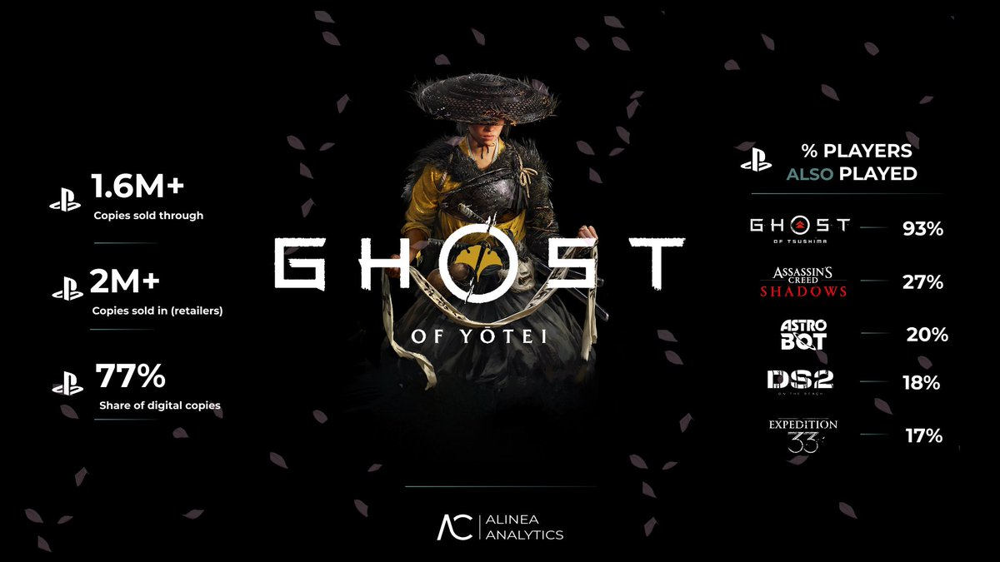

小虚空🍥
@tokerumaisurii
@OffMetaFifa @chhopsky @mrphillipchan In case you’re feeling too lazy to do a simple research:

Rhys Elliott
@superhys
Some @alineaanalytics Ghost of Yotei estimates:
1.6M+ sold to consumers (2M+ incl. retailers).
That's almost $100M in revenues. Yotei made back its $60M dev budget the day after launch.
It's outselling AC Shadows 1.5X on PS5 so far.
Did a big analysis! Substack link in bio. https://t.co/cTscApJMQl
Off meta fifa
@OffMetaFifa
@chhopsky @mrphillipchan evidence? announcements? official tweets? nah? ok cool dude.